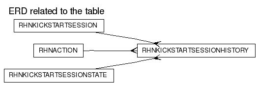

RHNKICKSTARTSESSIONHISTORY
DDL scriptColumns
| Name | Type | Nullable | Default value | Comment |
|---|
| ID | NUMBER(38) | N | | |
| KICKSTART_SESSION_ID | NUMBER(38) | N | | |
| ACTION_ID | NUMBER(38) | Y | | |
| STATE_ID | NUMBER(38) | N | | |
| TIME | DATE | N | (sysdate) | |
| MESSAGE | VARCHAR2(4000) | Y | | |
| CREATED | DATE | N | (sysdate) | |
| MODIFIED | DATE | N | (sysdate) | |
Primary key:
| Constraint Name | Columns |
|---|
| RHN_KS_SESSIONHIST_ID_PK | ID
|
Foreign Keys:
Options:
| Option | Settings |
|---|
| Tablespace | DATA_TBS |
| Index Organized | No |
| Generated by Oracle | No |
| Clustered | No |
| Nested | No |
| Temporary | No |
Indexes:
Triggers
RHN_KS_SESSIONHIST_MOD_TRIG
Legend: string keyword reserved word operator
CREATE TRIGGER
rhn_ks_sessionhist_mod_trig
before insert or update on rhnKickstartSessionHistory
for each row
REFERENCING NEW AS NEW OLD AS OLD
begin
:new.modified := sysdate;
end;